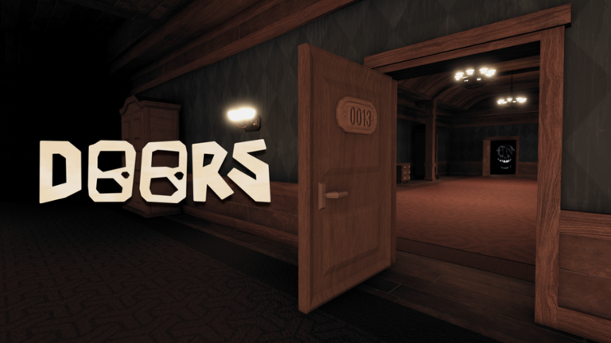

Doors foi um jogo revolucionario no Roblox, sendo um dos jogos mais jogados e não so pelas pessoas que jogavam roblox mas acabou sainda da bolha
No jogo você fica preso em um hotel a onde diversos monstros que vão tentar te matar com cada um deles tendo uma mecanica diferente e você tera que passar por 100 portas para você espasar para o "fim"
O jogo fui revolucinario tanto no seu modo de jogo que fui reconhecido fora do roblox e tendo mais de 4.1 Bilhões de visitas